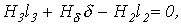
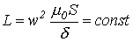

Решение задач по ТОЭ, ОТЦ, Высшей математике, Физике, Программированию...

Решение задач по ТОЭ, ОТЦ, Высшей математике, Физике, Программированию...
|
|
| Главная | Цены | Оплата | Примеры решений | Отзывы | Ccылки | Теория | Книги | Сотрудничество | Форум |
| Теория / ТОЭ / Лекция N 33. Общая характеристика задач и методов расчета магнитных цепей. |
|
Указанная в предыдущей лекции формальная аналогия между электрическими и магнитными цепями позволяет распространить все методы и технику расчета нелинейных резистивных цепей постоянного тока на нелинейные магнитные цепи. При этом для наглядности можно составить эквивалентную электрическую схему замещения исходной магнитной цепи, с использованием которой выполняется расчет. Нелинейность магнитных цепей определяется нелинейным характером зависимости
, являющейся аналогом ВАХ и определяемой характеристикой
ферромагнитного материала При расчете магнитных цепей на практике встречаются две типичные задачи: -задача определения величины намагничивающей силы (НС), необходимой для создания заданного магнитного потока (заданной магнитной индукции) на каком - либо участке магнитопровода (задача синтеза или “прямая“ задача); -задача нахождения потоков (магнитных индукций) на отдельных участках цепи по заданным значениям НС (задача анализа или “обратная” задача). Следует отметить, что задачи второго типа являются обычно более сложными и трудоемкими в решении. В общем случае в зависимости от типа решаемой задачи (“прямой” или “обратной”) решение может быть осуществлено следующими методами: -регулярными; -графическими; -итерационными. При этом при использовании каждого из этих методов первоначально необходимо указать на схеме направления НС, если известны направления токов в обмотках, или задаться их положительными направлениями, если их нужно определить. Затем задаются положительными направлениями магнитных потоков, после чего можно переходить к составлению эквивалентной схемы замещения и расчетам. Магнитные цепи по своей конфигурации могут быть подразделены на неразветвленные и разветвленные. В неразветвленной магнитной цепи на всех ее участках имеет место один и тот же поток, т.е. различные участки цепи соединены между собой последовательно. Разветвленные магнитные цепи содержат два и более контура.
Регулярные методы расчета Данными методами решаются задачи первого типа -”прямые” задачи. При этом в качестве исходных данных для расчета заданы конфигурация и основные геометрические размеры магнитной цепи, кривая (кривые) намагничивания ферромагнитного материала и магнитный поток или магнитная индукция в каком-либо сечении магнитопровода. Требуется найти НС, токи обмоток или, при известных значениях последних, число витков.
1. Прямая” задача для неразветвленной магнитной цепи Решение задач подобного типа осуществляется в следующей последовательности: 1. Намечается средняя линия (см. пунктирную линию на рис.1), которая затем делится на участки с одинаковым сечением магнитопровода. 2.
Исходя из постоянства магнитного потока вдоль всей цепи, определяются
значения индукции для каждого . 3. По кривой намагничивания для каждого значения находятся напряженности на ферромагнитных участках; напряженность поля в воздушном зазоре определяется согласно
4. По второму закону Кирхгофа для магнитной цепи определяется искомая НС путем суммирования падений магнитного напряжения вдоль контура: , где
2. “Прямая” задача для разветвленной магнитной цепи Расчет разветвленных магнитных цепей основан на совместном применении первого и второго законов Кирхгофа для магнитных цепей. Последовательность решения задач данного типа в целом соответствует рассмотренному выше алгоритму решения “прямой” задачи для неразветвленной цепи. При этом для определения магнитных потоков на участках магнитопровода, для которых магнитная напряженность известна или может быть вычислена на основании второго закона Кирхгофа, следует использовать алгоритм
В остальных случаях неизвестные магнитные потоки определяются на основании первого закона Кирхгофа для магнитных цепей. В качестве примера анализа
разветвленной магнитной цепи при заданных геометрии магнитной цепи на рис. 2
и характеристике Алгоритм решения задачи следующий: 1. Задаем положительные направления магнитных потоков в стержнях магнитопровода (см. рис. 2). 2. Определяем напряженность в воздушном зазоре и по зависимости 3. По второму закону Кирхгофа для правого контура можно записать  откуда находим и по зависимости 4. В соответствии с первым законом Кирхгофа . Тогда , и по зависимости определяем . 5. В соответствии со вторым законом Кирхгофа для искомой НС имеет место уравнение .
Графические методы расчета Графическими методами решаются задачи второго типа - “обратные” задачи. При этом в качестве исходных данных для расчета заданы конфигурация и геометрические размеры магнитной цепи, кривая (кривые) намагничивания ферромагнитного материала, а также НС обмоток. Требуется найти значения потоков (индукций) на отдельных участках магнитопровода. Данные методы основаны на графическом представлении вебер-амперных
характеристик
1. “Обратная” задача для неразветвленной магнитной цепи Решение задач подобного типа осуществляется в следующей последовательности: 1. Задаются значениями потока и определяют для них НС , как при решении “прямой” задачи. При этом следует стремиться подобрать два достаточно близких значения потока, чтобы получить , несколько меньшую и несколько большую заданной величины НС. 2. По полученным данным строится часть характеристики магнитной цепи (вблизи заданного значения НС), и по ней определяется поток, соответствующий заданной величине НС. При расчете неразветвленных магнитных цепей, содержащих воздушные зазоры, удобно использовать метод пересечений, при котором искомое решение определяется точкой пересечения нелинейной вебер-амперной характеристики нелинейной части цепи и линейной характеристики линейного участка, строящейся на основании уравнения
где -магнитное сопротивление воздушного зазора.
2. “Обратная” задача для разветвленной магнитной цепи Замена магнитной цепи эквивалентной электрической схемой замещения (см. рис. 3, на котором приведена схема замещения магнитной цепи на рис. 2) позволяет решать задачи данного типа с использованием всех графических методов и приемов, применяемых при анализе аналогичных нелинейных электрических цепей постоянного тока. В этом случае при расчете магнитных цепей, содержащих два узла (такую конфигурацию имеет большое число используемых на практике магнитопроводов), широко используется метод двух узлов. Идея решения данным методом аналогична рассмотренной для нелинейных резистивных цепей постоянного тока и заключается в следующем: 1. Вычисляются зависимости потоков во всех -х ветвях магнитной цепи в функции общей величины -магнитного напряжения между узлами и . 2. Определяется, в какой точке графически реализуется первый закон Кирхгофа Соответствующие данной точке потоки являются решением задачи.
Итерационные методы расчета Данные методы, сущность которых была рассмотрена при анализе нелинейных резистивных цепей постоянного тока, являются приближенными численными способами решения нелинейных алгебраических уравнений, описывающих состояние магнитной цепи. Как было отмечено выше, они хорошо поддаются машинной алгоритмизации и в настоящее время широко используются при исследовании сложных магнитных цепей на ЦВМ. При анализе относительно простых цепей, содержащих небольшое число узлов и нелинейных элементов в эквивалентной электрической схеме замещения (обычно до двух-трех), возможна реализация методов “вручную”. В качестве примера приведем алгоритм расчета магнитной цепи на рис. 1, в которой
при заданных геометрии магнитопровода, характеристике В соответствии с пошаговым расчетом для данной цепи можно записать
где Задаемся значением , вычисляем для
Статическая и дифференциальная индуктивности катушки Пусть имеем катушку с ферромагнитным сердечником, представленную на рис. 4. В соответствии с определением потокосцепления
и на основании закона полного тока , откуда
Из соотношений (2) и (3) вытекает, что функция качественно имеет такой же вид,
что и Статическая индуктивность катушки с ферромагнитным сердечником ; дифференциальная индуктивность . Если магнитную проводимость сердечника на рис. 4 обозначить через , то и , откуда
Используя соотношение (4), покажем влияние воздушного зазора на индуктивность катушки. Пусть катушка на рис. 4 имеет воздушный зазор , откуда . При  . Таким образом, воздушный зазор линеаризует катушку с ферромагнитным сердечником. Зазор, для которого выполняется неравенство , называется большим зазором.
Литература
Контрольные вопросы и задачи
|